2024 — 至今
光紅建聖股份有限公司
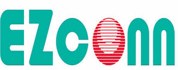
軟體開發工程師 · 資訊部門
- 數位轉型推動
- 生產管理系統（MES）開發
- AI 內部管理文件問答系統開發
- 門禁管理系統開發
全端開發 · 物聯網數據展示 · 自動化測試 · AI / RAG 應用
致力於把複雜的系統需求，轉化為清晰、可被使用與信賴的數位產品。
橫跨網路設備、自動化測試與 AI 應用的全端工程師，十年以上的系統維護與開發經驗。

軟體開發工程師 · 資訊部門
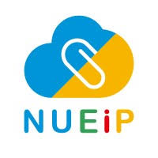
派遣軟體工程師 · 偉欣資訊
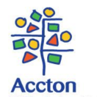
網路軟體工程師
軟體品質管理工程師 · 軟體研發部
資訊工程系
電子工程系
由構想到上線——以下精選作品橫向陳列，點選任一相框即可進入瀏覽。
雙人協作的記帳與預算系統，含信用卡帳單與雲端備份。
瀏覽作品 →個人數位名片的互動展示頁。
瀏覽作品 →快速試算每月收支與預算分配。
瀏覽作品 →於瀏覽器中為 PDF 文件加上簽章。
瀏覽作品 →網頁音樂播放介面練習。
瀏覽作品 →影像作品的相簿陳列版面。
瀏覽作品 →吉他和弦與練習輔助頁面。
瀏覽作品 →Vue 元件與互動的實作練習。
瀏覽作品 →淡水整復推拿服務形象網頁。
瀏覽作品 →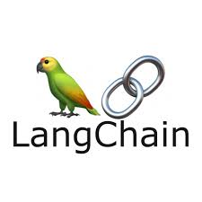
LangChain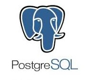
PostgreSQL / PGVector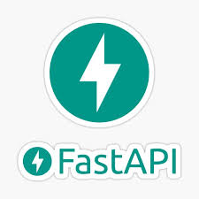
FastAPI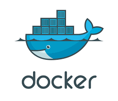
Docker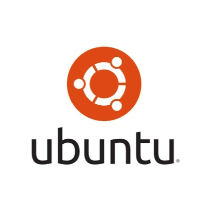
Ubuntu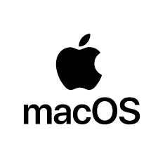
macOS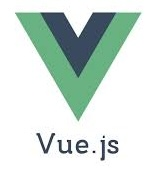
Vue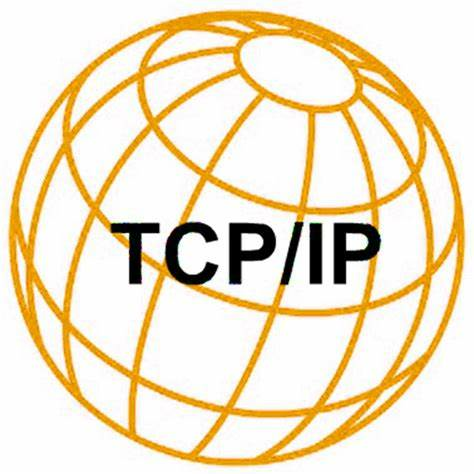
TCP/IP OpenWrt Cypress
WordPress
Cypress
WordPress
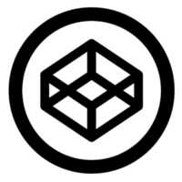
CodePen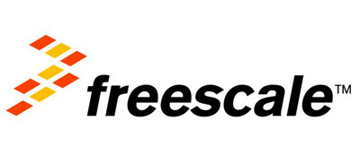
Freescale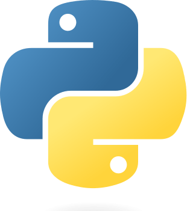
Python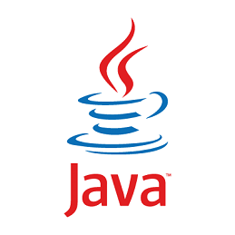
Java HTML · CSS · JS
HTML · CSS · JS